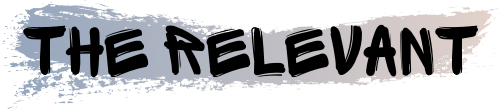

Actualités

L'art de l'inclusion, Festival Karavel 2021
Après avoir remporté les Hip Hop Games en 2019, la compagnie  revient à Karavel avec L’Art de l’inclusion, une création qui explore les comportements et postures induits par la discrimination. Depuis 2016, la compagnie lyonnaise s’attache à questionner la société actuelle autour de créations aux problématiques humaines et sociales.L’Art de l’inclusion aborde la notion de discrimination en attribuant à chacun des interprètes un rôle social distinct. Tour à tour exclus,marginalisés ou absorbés par le groupe, les danseurs établissent un vocabulaire chorégraphique qui définit leurs places. Le mouvement, prétexte à la rencontre et au dialogue, est ainsi indispensable et rend le message de cette pièce d’autant plus percutant. Une première création très prometteuse !

Urgence, Théâtre de Chaillot 2021
Pensée par Antoine Colnot et Anne Rehbinder, de la Compagnie HKC, et par le chorégraphe Amala Dianor, Urgence représente la prise de parole radicale et l’engagement physique brûlant de cinq jeunes qui ont choisi d’embrasser une carrière de danseur professionnel, faisant fi des préjugés socio-culturels. Rarement spectacle aura aussi bien porté son nom. C’est en effet à une urgence artistique et humaine – porter en scène le corps et la parole des jeunes des quartiers dits « sensibles » – que répondent Antoine Colnot, metteur en scène, et Anne Rehbinder, auteure, avec le concours du chorégraphe Amala Dianor. D’origine lyonnaise, leurs cinq interprètes, issus du hip-hop, mêlent théâtre et danse pour faire entendre leurs voix singulières, sur les sons métissés du musicien Olivier Slabiak. Leur parcours d’émancipation culturelle, leur besoin de reconnaissance, leur apprentissage artistique mais aussi leur désir de nouveaux modes d’expression ont été mûris durant un long processus de création. Tous ces thèmes forment la trame de cette création hybride, passionnante, qui veut inventer un « nouveau mode de partage » avec le public.
Urgence, La Biennale de Lyon 2021
C’est une création à l’histoire singulière puisque les interprètes sont issus du projet Babel 8.3, spectacle participatif pour 300 amateurs porté par la Maison de la Danse de Lyon en 2015. Quelques années après, ils croisent le chemin de la Compagnie HKC. Un désir de création nait alors, avec pour ambition de questionner l’émancipation, individuelle et collective. Quelle est la spécificité de ce sentiment d’urgence ? Qu’est ce qui permet de faire exploser les attentes de la norme ? Ces danseurs incarnent le vivant de cette réflexion et la portent sur scène avec une prise de parole radicale et un engagement physique brûlant, signée par trois artistes : Antoine Colnot-metteur en scène, Anne Rehbinder autrice, et Amala Dianor-chorégraphe invité. Cette aventure si singulière verra le jour là où elle a commencé, à Lyon. Un témoignage au plus près de cette jeunesse porteuse d’idéaux !